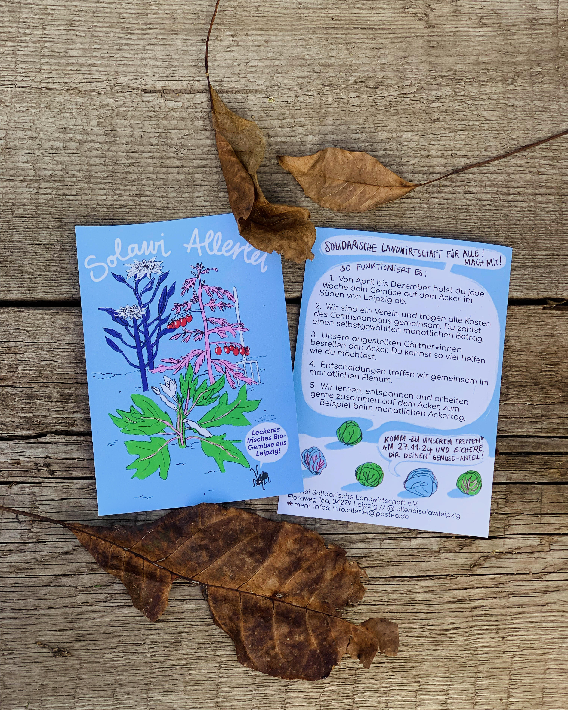

Wir sind eine solidarische Landwirtschaft und bauen frisches Gemüse in Leipzig Dölitz-Dösen an. Du möchtest bei uns mitmachen und eine wöchentliche Gemüsekiste beziehen? Dann schreib uns eine Mail und wir setzen uns mit dir in Verbindung! Wir freuen uns auf dich!
Unsere E-Mail: info.allerlei@posteo.de
Aktuelle Infos findest du bei Mastodon.
